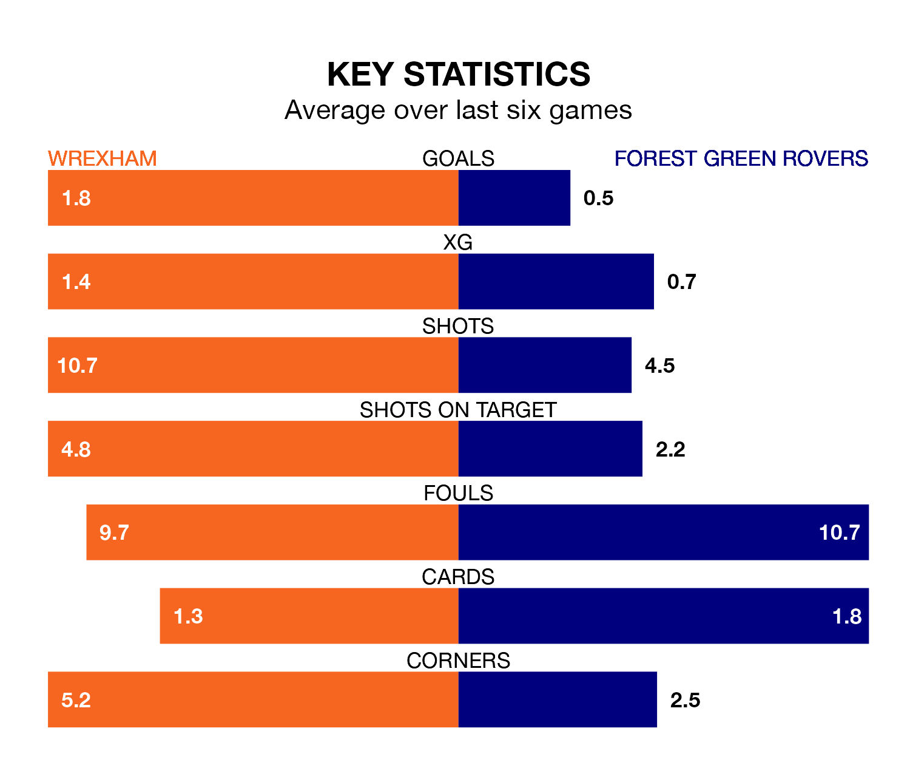

Relegation candidates Forest Green Rovers face a challenge away against high-flying Wrexham at the Racecourse Ground on Saturday.
Forest Green Rovers are rooted to the bottom of the EFL League Two table, and have picked up nine wins and nine draws in their 43 games to date.
The Dragons, meanwhile, are second in the standings with 79 points, having won 23 and drawn 10, and are four points behind table-toppers Stockport County.
With 41 goals in 43 games so far this season, Forest Green are the league's second-lowest scorers with 1.0 goals per game. And they are conceding more than average, letting in 71 goals at a rate of 1.7 per game.
Wrexham, meanwhile, are above average scorers, with 1.8 goals per game, compared to a league average of 1.5. They have conceded 1.2 goals per game.
The Dragons are in reasonable form in EFL League Two, with four wins and two losses from their last six games.
With a win and five losses over that period, Rovers' form is much worse – they have taken three points from 18, compared to the home side's 12.
In the last 10 years, Wrexham and Forest Green have played each other on eight occasions. Wrexham won two of them, Forest Green one, and they drew five times.
On average, the Dragons scored 1.0 goal and the Green 1.0 in those matches.
Their last meeting was on February 27, when they played out a 1-1 draw.
In Paul Philip Mullin, Wrexham have one of the league's most on-form strikers so far this season. He has notched 21 goals in 35 appearances, to sit third in the scoring charts.
His goal rate of one every 132 minutes is quicker than that of Mathew Stevens, the Green's top scorer with a goal every 180 minutes, and a total of nine goals in 27 games.
Wrexham's last match was on Tuesday, a 4-1 win against Crawley Town, with Mullin (two), Andy Cannon and Ryan Jack Barnett getting the goals for the Dragons.
Forest Green lost 1-0 against Mansfield Town last time out, also on Tuesday.
Updated: 10:01 (UTC), 12/04/24